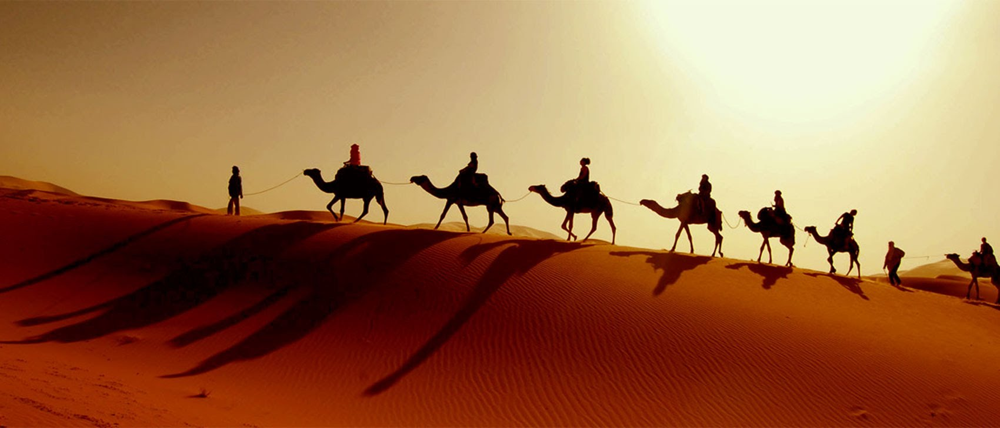

NORTH INDIA TOUR
RAJASTHAN
Rajasthan...the name itself is enough to conjure vivid images of grand palaces, magnificent forts and a culture,which is at once traditional and vibrant. Just a few places in the world have been able to be deeply rooted to their original values and ideas, with Rajasthan being one of them. Located in the north-western part of India, this enchanting state is also widely known for its delectable cuisine and remarkable folk art. Book Rajasthan tour packages to witness the irresistible charm of Rajasthani cities and their bustling bazaars, monuments and experience unforgettable hospitality. Since the state is well connected to the rest of India by air, railways and roads, coming here is easy and hassle free. Three major Rajasthani cities, Jaipur, Udaipur and Jodhpur, have airports, among which Jaipur International Airport caters to overseas travellers. Encompassing legends, history and myths of the eras gone by, Rajasthan is an ideal destination for going on family tours. To appreciate the majestic beauty of this state, visit its glorious cities and quaint villages. In the form of its medieval structures, each part of Rajasthan tells the story of Rajput valour and grandeur. The architectural wonders of Jaipur and Udaipur, Jain temples of Jaisalmer and Dilwara, and the spiritual enrichment found in Pushkar, together make up the rich heritage of Rajasthan. Set against a picturesque backdrop of mountains, this state is replete with natural wonders as well. Ranthambore National Park beckons visitors to spot a tiger, hidden in its dense forests. Camels, walking upon golden sand dunes, are indeed a spectacular vista. Sagas of ancient battles are reverberated in every formidable fort, found in this state, including Chittorgarh Fort and Mehrangarh Fort. Rajasthan holiday packages are opportunities for discovering the enchantment of a realm, which inspires awe. Rajasthan, as a vacation spot, is also popular among newlywed couples. Exploration of romantic cities like Mount Abu and Udaipur is generally a part of Rajasthan honeymoon packages. Offering a mix of royalty and romance, Rajasthan is a good choice for honeymoon trips.
HIMACHAL PRADESH

The spectacular abode of snow-covered peaks, dense forests, deep river valleys and cascading waterfalls, Himachal Pradesh is a living dreamland for mountain lovers. Along with the traces of the colonial times, a large influence of Buddhism can also be seen in the culture of Himachal. The entire state is bestowed with incredible gifts from nature in the form of picturesque landscapes. Himachal Pradesh tour packages provide you an opportunity to come here and be embraced by the serenity and beauty of this bewitching realm. Nestled in the Western Himalayas, Himachal Pradesh can be reached by road, rail and air from around the country. Himachal holiday packages let you partake in an array of adrenalin-pumping activities like paragliding, rafting, trekking and skiing. Enfolded mostly in mountains and hills, Himachal is an ideal destination for adventure seekers. Even if you have come here, looking for peace and seclusion, Himachal will certainly not disappoint you. Curl up with a book in front of a crackling fire while the snow slowly touches the ground in idyllic destinations like Kasauli and Kufri. Shimla, the capital city, is known for its colonial heritage as it used to be the summer capital of British India. The pristine surfaces of Shimla stand in contrast with lush hillsides while Victorian-style architecture boasts its own unique charm. Family tours in Himachal Pradesh are incomplete without visiting the major tourist attractions of Shimla, such as The Ridge, Daranghati Sanctuary, Annadale and Chadwick Falls. McLeod Ganj, Lahaul, Spiti and Dharamshala are popular among tourists, who are enticed by the Buddhist culture. Himachal Pradesh is one such state, which is entirely set amidst picture-perfect locations. The snowy mountains, refreshing greenery and calming effect of the environs make it an excellent honeymooning spot as well. Radiating a blissful romantic aura, places like Mashobra, Chail, Dalhousie, Manali and Chamba are included in various Himachal honeymoon packages. With hills, reaching the feathery clouds and covered in lushness, the beauty of these heavenly destinations would bring you close to your love.
MANALI
Sitting in the lap of lofty mountains, Manali is a paradise for nature lovers and peace seekers. This picturesque hill station is located at a height of around 2000 metres, in the state of Himachal Pradesh. Manali is known for its breathtakingly beautiful landscape, created by deep gorges, soaring mountains, lush valleys and gushing rivers. Backpackers and families alike come here for an escape from the monotony of life. Manali tour packages give tourists an opportunity to experience the clandestine charm and serenity of this magical hill station. Manali got its name from the sage Manu, who as per Hindu mythology is believed to have created human beings. Legends say that the sage stepped off his ark in Manali to salvage the human race after a devastating flood destroyed the world. The mountainous terrains make Manali difficult to be reached by trains. The best way to access the area is by air and road. Manali holiday packages come with opportunities for a number of adventure sports as well. Tourists can partake in paragliding, skiing, ice skating, trekking and mountaineering. Rafting and canoeing in the Beas River is also enough to pump up the adrenalin for adventure seekers. The town is blessed with abundant scenic beauty and spots, which serve as tourist magnets. Located at a distance of about 50 kilometres from here, Rohtang Pass is one of the most popular tourist attractions in the region. Nature lovers come here to enjoy the spectacular views of glaciers, skyward peaks and the meandering Chandra River. Adventure enthusiasts have the opportunity to enjoy mountain biking and skiing as well. Family holiday in Manali are a great way to spend time with your loved ones. Top tourist attractions in Manali are Hadimba Temple, Rahala Falls, and the various Buddhist monasteries found in the area. Given the romantic aura of this hill station, honeymoon holidays in Manali are especially memorable. Couples come here to spend unforgettable days in the company of each other, surrounded by the beauty of this magnificent creation of nature.
BIKANER

Caparisoned camels with tinkling trinkets, women in sequined ghagras, men flaunting multi-hued turbans, red-and-yellow sandstone temples, undulating golden dunes of the Thar under an azure skyâBikaner is nothing short of natureâs own canvas. Founded in 1488 CE by Rao Bikaji, this royal, fortified city encircled by a wall with five entrance gates exudes the surrounding desertâs warmth. Imposing palaces, sprawling havelis, mellifluous ballads, painted puppets, high-flying kites, sparkling jewelry, tasty savories and dune-caressing camel safarisâthrough the slightly disheveled edges of the city peeps a land that still harks back to an age of chivalrous princes and alluring princesses.
CHANDIGARH
Named after the Goddess Chandi, this beautifully planned city is one of finest examples of urban development. A union territory and state capital to both Punjab and Haryana, Chandigarh has a unique amalgamation of Punjabi and Jat culture. Called the City of Beauty, Chandigarh is internationally acclaimed for its architecture and urban planning. The near uniform houses and neatly laid out Sectors are some of the finest examples of the work of French architects Le Corbusier and Pierre Jeanneret. Placed on the foothills of the Shivalik Range, Chandigarh serves as a gateway to the gorgeous hill stations of Haryana and even Himachal. But a town is worth a visit for its own fascinating architecture and vibrant local culture....
SRINAGAR
Srinagar, the summer seat of the government of the state of Jammu and Kashmir has long been one of Indiaâs most popular tourist destinations. In part, this has had to do with the multi-layered character of the city and its several attractions. And in part, this is because Srinagar serves as the base for the numerous places of interest and immense natural beauty that lie within Kashmir â and for most places, this remains the access point. Up to Indiaâs Independence in 1947, only the cream of the country traveled and holidayed in Kashmir. Then, within a few short years, there was a boom in tourism and this soon became the backbone of Srinagarâs economy and thousands of visitors thronged to the valley of which the Mughal Emperor, Jehangir is said to have remarked in the seventeenth century, "Agar Firdaus bar rue zameen ast, Hamin ast-o, hamin ast-o, hamin ast" - If there is a Paradise on earth, it is here, it is here, it is here. Srinagar is built on both sides of the river, Jhelum. The old city has quite a different character to the wide spaces of the parks and boulevards and gives expression to the phrase âcheek by jowlâ; this part of the city with narrow streets and houses of exposed brick and elaborate timberwork â which includes half a dozen old bridges â is also the area where many craftsmen live and work; this includes most, if not all of the cityâs copper workers. Srinagar, which lies in a valley, changes its character with every season. It gets snow-laden winds coming down from the hills fairly early in winter. The lakes practically freeze over and yet, some of the iconic houseboats tethered to the icy banks still function. The famous chinar trees and boulevards lined by poplars are stripped clean of their leaves and before rain and snow firmly hush them, they make for a remarkably noisy carpet that rustles and crunches at every step. The inner architecture and scaffolding of these magnificent trees now comes up for display with proud trunks and wiry branches. People move about with 'kangris' with clay bowls and frames of wicker, that hold smoldering bits of charcoal under heavy 'phirans', warm long tunics. In summer, Srinagar gets fairly hot and temperatures can touch 38 degrees Celsius. The numerous parks become the venue for evening promenades.
NEW DELHI

On an Indian holiday, you canât miss out the capital city, Delhi, a potpourri of cultures, traditions, architecture, and human diversity. Located on the banks of river Yamuna, the city has been the capital of many empires, has been destroyed and rose again to prominence each time. Old Delhi got some of its landmark monuments such as Red Fort, Humayunâs Tomb and Jama Masjid, from the Mughal rulers. Amble down the meandering lanes of Chandni Chowk in Old Delhi and shop for spices, traditional apparel, colorful glass bangles, silver trinkets and intricate gold jewelry. Emerge into the leafy boulevards of central Delhi, dotted with works of Mughal and Victorian architecture, sprawling old mansions and the famous India Gate.
WEST BENGAL

It has come up with a variety of West Bengal tours, covering various aspects of one of India's culturally richest states. Be it local traditions like the celebration of Durga Pooja or colonial legacy in the form of memorials, Kolkata, the state capital, displays it with pride. Go on a boat ride or wildlife safari with our West Bengal packages in the vast mangrove forest, called Sundarbans, where you can spot tigers, dolphins and saltwater crocodiles. Similarly, you may spot an endangered one-horned rhino in the Dooars grasslands. One of the best places to beat the summer heat or spend a honeymoon during West Bengal holidays is Darjeeling. Take the famous toy train, tour a tea estate, go rafting in the Rangeet or Teesta River or explore the hordes of trekking trails through the mountains. Staying at a plush hotel or a comfortable lodge, overlooking Mount Kanchenjunga, will surely relieve you all stress.
NAINITAL
Images of glistening lakes, forested hills and meandering paths come to mind when Nainital is talked about. The bustling roads of Nainital, beautified with Victorian lamp posts, radiate a vintage charm. Located in the enchanting state of Uttarakhand, it is a peaceful destination to get away from the humdrum of life. Nainital tour packages are affordable ways to spend a few days amidst scenic beauty, complemented by the mostly pleasant weather of the region. An ideal spot to escape the heat of the plains, the town is easily accessible via trains, buses and taxis. Since it is a hill station, Nainital is not directly connected to other cities by air. The nearest airport is in Pantnagar, which is around 60 km from here. On their family tours in Nainital, travellers have an unmissable chance to sightsee at a myriad of spots. Some of the sites that should not be missed include scenic and cultural spots, such as China Peak, Naina Devi Temple, Hanuman Garhi, Dorothy's Seat, Snow View Point and Raj Bhawan. Home to Himalayan black bears, snow leopards and steppe eagles along with many other animal species, Nainital Zoo is an apt place for kids and grownups alike. Take your young ones to learn a few things about the ecosphere at the famous Eco Cave Garden. With so much to see and experience, Nainital beckons you to take a memorable break from the noise of the city. Booking holiday packages to the hill station is an easy way to enjoy a fun-filled vacation here. This picturesque lake town is also an ideal destination for going on a honeymoon. Spending time with your loving partner gets all the more enticing with the romantic setting of this hill station. Surrounded by serene forests, newlyweds can admire the magnificent views of the distant Himalayas. Boating in the sparkling Naini Lake while the sky slowly turns vermillion in the evening is something honeymooners will cherish forever. Nainital honeymoon packages offer you the time to celebrate your marriage and cherish the first few moments together.
LADAKH
Ladakh, the Land of High Passes, wins hearts with its simplicity and rugged natural beauty. Spectacular landscapes, enfolded by serrated mountains, give the region its unique character. Largely influenced by Buddhism, Ladakh is home to numerous ornate monasteries. The pristine natural heritage of this fabled realm can be seen in its picturesque lakes, unspoilt by human civilisation. Showcasing an exotic character and cloaked in a transcendental aura, Ladakh is a destination, which is gaining immense popularity among globetrotters. Ladakh tour packages are opportunities that would take you to see a world, so serene and picture-perfect, that it would seem like a dreamland. Reaching Ladakh can be a little tricky due to the undulating quality of its terrain; however, it is accessible by various means of transport. The main airport in the region is in Leh, its largest city. There are roads to access Ladakh for those, who would like to enjoy a drive. People can use National Highway 1D to come here from Srinagar or drive on the more popular Leh-Manali Highway. Ladakh has been bestowed with an abundance of natural wonders. Located in the north-eastern part of Ladakh, the Nubra Valley matches the ideals of scenic beauty. While availing Ladakh holiday packages, keep in mind they take you to some of the top tourist attractions like Hemis Monastery, Thiskey Monastery, Tso Moriri lake and Pangong Tso lake. If you are an adventure seeker, a trekking trip to the Zanskar Range should be in order. Ladakh also offers marvellous shopping opportunities for Tibetan handicrafts, available in its vibrant markets. Make the most of your family tours in Ladakh by visiting Hemis National Park, home to a number of endangered species of animals. Snow leopards, Tibetan hares and yak are some of the animals that can be spotted here. The snow-capped mountains and welcoming seclusion of this enchanting region render it an ideal honeymoon destination. Ladakh honeymoon packages provide newlyweds a perfect milieu for spending days, full of love and adoration.